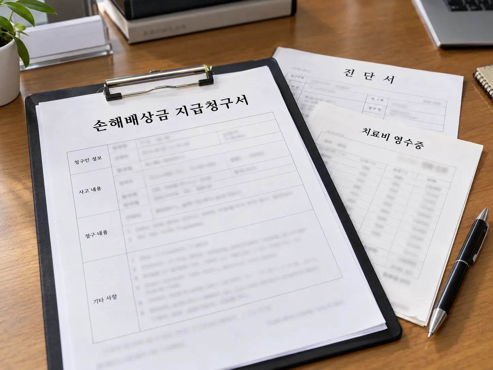

▲ 가해 차량이 사라진 뺑소니 사고, 피해자는 어디서 보상받을 수 있을까 ⓒ CarPrism (AI 생성 이미지)
신호대기 중 뒤에서 받혔는데, 가해 차량이 그대로 도주해버렸다. 블랙박스에 번호판이 제대로 찍히지 않았다면 가해자를 특정하기 어렵다. 혹은 어렵게 가해자를 찾았는데 책임보험조차 가입돼 있지 않은 차였다면, 치료비와 손해는 누가 물어줄까.
이런 경우를 위해 국가가 보험사 대신 최소한의 보상을 해주는 제도가 있다. 바로 자동차손해배상보장법에 근거한 "자동차손해배상 보장사업", 흔히 정부보장사업이라 불리는 제도다.
1. 정부보장사업이란 — 보험사가 없을 때 국가가 대신 갚는 돈
정부보장사업은 자동차손해배상보장법 제30조에 근거한 사회보장제도다. 자동차 사고 피해자가 가해자나 보험사 등 어떤 경로로도 손해를 배상받을 수 없을 때, 최소한의 구제를 위해 국가가 대신 보상금을 지급한다.
| 구분 | 내용 |
|---|---|
| 뺑소니 사고 | 가해 차량의 보유자를 알 수 없는 사고(도주·번호판 미확인 등) |
| 무보험 사고 | 가해 차량이 책임보험(대인배상Ⅰ) 또는 공제계약에 가입돼 있지 않은 경우 |
| 도난·무단운전 사고 | 도난당하거나 무단으로 운전된 차량에 의한 사고로, 정당한 보유자로부터 배상을 받지 못하는 경우 |
📍 시행 연혁
뺑소니 사고 보상은 1978년부터, 무보험 사고 보상은 1985년부터 시행돼 온 오래된 제도다. 2022년부터는 차량 낙하물 사고로 인한 피해도 보상 대상에 추가됐다. 2023년 1월 1일부터는 그동안 손해보험협회 등이 나눠 맡던 보상업무를 자동차손해배상진흥원이 통합해 수행하고 있다.
❌ 보상 대상에서 제외되는 경우
· 물적 피해만 발생한 경우 (차량 파손 등 대물 손해는 대상 아님)
· 가해자로부터 이미 손해배상을 받은 경우
· 공동불법행위로 가해자 측 보험에서 배상 가능한 경우
· 산재보험, 국가배상법 등 다른 제도로 보상받을 수 있는 경우
· 골프장 카트 등 도로 운행이 금지된 차량에 의한 사고
2. 보상 한도 — 사망·부상·후유장애별 지급 기준
정부보장사업의 보상 한도는 자동차 책임보험(대인배상Ⅰ) 기준과 같은 구조로 짜여 있다. 2016년 4월 1일 이후 발생한 사고를 기준으로 한 지급 한도는 다음과 같다.
| 구분 | 보상 한도 |
|---|---|
| 사망 | 최저 2,000만 원 ~ 최고 1억 5,000만 원 |
| 부상(1등급) | 최고 3,000만 원 |
| 부상(7~14등급) | 등급에 따라 50만~500만 원 수준 |
| 후유장애(1등급) | 최고 1억 5,000만 원 |
| 후유장애(14등급) | 1,000만 원 수준 |
📍 대물 피해는 별도 제도로 접근해야 한다
정부보장사업은 사망·부상·후유장애 등 인적피해만 보상한다. 뺑소니나 무보험 차량에 내 차가 파손됐다면, 정부보장사업이 아니라 내가 가입한 자기차량손해(자차) 특약이나 무보험차상해 특약 중 대물 관련 특약 등을 통해 별도로 처리해야 한다.
3. 신청 절차 — 경찰 신고부터 진흥원 청구까지
가장 먼저 해야 할 일은 경찰 신고다. 사고 직후 관할 경찰서에 신고해 교통사고사실확인원이나 접수증을 발급받아야 하며, 이 서류가 없으면 청구 자체가 사실상 어렵다.
▲ 정부보장사업 청구의 출발점은 경찰서에서 발급받는 사고 확인 서류다 ⓒ CarPrism (AI 생성 이미지)
✅ 신청 절차 4단계
· 1단계 — 사고 발생: 뺑소니·무보험·도난차량 사고로 인적피해 발생
· 2단계 — 경찰서 신고: 교통사고사실확인원 또는 접수증 발급
· 3단계 — 병원 치료: 진단서, 치료비 영수증 등 손해 입증 자료 확보
· 4단계 — 자동차손해배상진흥원 청구: 서류 구비 후 우편 또는 홈페이지로 접수
자동차손해배상진흥원 홈페이지에서 정부보장사업 보상 절차와 서식을 확인할 수 있다. 정부보장사업 보상안내 바로가기
4. 필요 서류 — 이것만 있으면 청구할 수 있다
서류가 부족하면 접수 자체가 지연되거나 반려될 수 있다. 사고 직후부터 관련 서류를 빠짐없이 챙겨두는 것이 청구 속도를 좌우한다.

▲ 손해배상금 지급청구서, 진단서, 치료비 영수증은 정부보장사업 청구의 기본 서류다 ⓒ CarPrism (AI 생성 이미지)
| 구분 | 서류 |
|---|---|
| 필수 서류 | 손해보상금 지급청구서, 개인정보동의서(진흥원 양식), 교통사고사실확인원 또는 접수증, 진단서 |
| 추가 서류 | 치료비 영수증(명세서), 그 밖의 손해 입증 서류 일체 |
| 가불금 청구 시 | 별도의 가불금 청구서 추가 제출 |
📍 가불금 제도도 함께 알아두자
치료가 끝나기 전이라도 당장 치료비가 필요한 상황이라면, 최종 손해액이 확정되기 전에 우선 일부 금액을 받을 수 있는 가불금 청구 제도를 이용할 수 있다. 급한 치료비 부담을 줄이는 데 활용할 수 있는 절차다.
5. 개인 무보험차상해 특약과는 무엇이 다른가
정부보장사업과 헷갈리기 쉬운 것이 개인 자동차보험의 무보험차상해 특약이다. 둘 다 무보험 차량 사고 피해자를 돕는다는 점은 같지만, 재원과 청구 시점, 보상 한도의 기준이 다르다.
| 구분 | 정부보장사업 | 무보험차상해 특약 |
|---|---|---|
| 재원 | 국가(자동차손해배상진흥원 위탁 운영) | 본인이 가입한 자동차보험 특약 |
| 가입 여부 | 모든 국민에게 적용되는 법정 제도, 별도 가입 불필요 | 본인이 특약에 가입해야만 이용 가능 |
| 보상 한도 | 책임보험(대인배상Ⅰ) 수준의 정해진 한도 | 가입 시 설정한 특약 한도(대인배상Ⅱ 수준까지 확대 가능) |
| 청구 시점 | 손해 확정 후 진흥원에 청구 | 사고 직후 본인 보험사에 먼저 청구 가능 |
📍 특약이 있다면 더 유리할 수 있다
무보험차상해 특약에 가입돼 있다면, 정부보장사업의 정액에 가까운 한도보다 더 폭넓은 보상을 받을 수 있는 경우가 많다. 또 사고 합의나 가해자 확정을 기다리지 않고 본인 보험사에 먼저 청구해 신속히 받는 방법도 있다. 두 제도는 배타적이지 않으므로, 특약 가입 여부를 먼저 확인하고 정부보장사업을 보완적으로 활용하는 것이 실질적으로 유리하다.
6. 문의는 어디로 — 상담부터 청구까지 한 곳에서
제도가 생소하게 느껴진다면 우선 전화나 홈페이지 상담으로 시작해도 된다. 자동차손해배상진흥원은 통합 콜센터를 통해 정부보장사업 관련 문의와 접수 안내를 함께 제공하고 있다.
▲ 신청 방법이나 서류가 헷갈린다면 통합 콜센터로 먼저 문의하는 것이 빠르다 ⓒ CarPrism (AI 생성 이미지)
✅ 문의 및 신청 채널
· 통합안내 콜센터: 1544-0049
· 자동차손해배상진흥원 홈페이지: 서식 다운로드, 온라인 접수 안내 확인 가능
· 민원·분쟁조정: 보상 결과에 이의가 있으면 진흥원 민원 창구를 통해 재검토 요청 가능
진흥원 홈페이지의 민원·분쟁조정 자주하는 질문 페이지에서 실제 접수 사례와 절차를 더 자세히 확인할 수 있다. 진흥원 민원 FAQ 바로가기
7. 요약
뺑소니를 당했거나, 가해 차량이 책임보험조차 없거나, 도난·무단운전 차량에 다쳤다면 정부보장사업을 통해 국가로부터 보상받을 수 있다. 사망 최고 1억 5,000만 원, 부상 최고 3,000만 원, 후유장애 최고 1억 5,000만 원 한도 내에서 지급되며, 물적 피해는 대상이 아니다.
절차는 경찰 신고 → 병원 치료 → 자동차손해배상진흥원 청구 순으로 진행되고, 신청 기한은 사고일로부터 3년이다. 필요 서류는 손해배상금 지급청구서, 교통사고사실확인원, 진단서, 치료비 영수증 등이며, 급하면 가불금 청구도 가능하다.
개인 무보험차상해 특약에 가입돼 있다면 보상 한도가 더 넓고 청구도 더 빠를 수 있으므로 함께 확인하는 것이 좋다. 제도가 헷갈린다면 자동차손해배상진흥원 통합 콜센터(1544-0049)로 먼저 문의하는 것이 가장 빠른 방법이다.